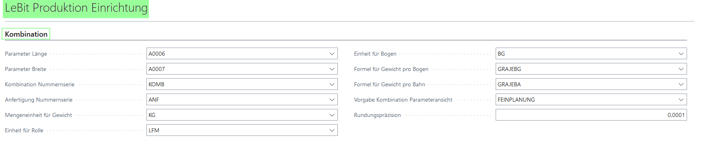
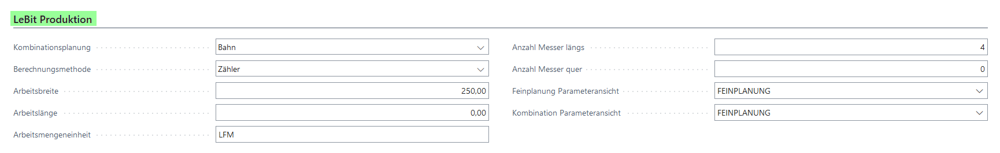
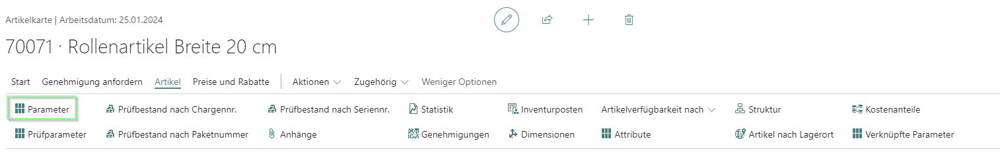
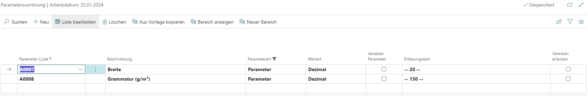

Notwendige Einrichtungen
LeBit Produktion Einrichtung
In der LeBit Produktion Einrichtung im Register "Kombination" müssen
verschiedene Dinge eingerichtet werden.

Abbildung 15: LeBit Produktion Einrichtung Register "Kombination"
| Feldname | Funktion |
|---|---|
| Parameter Länge | Parameter wird festgelegt, der die Länge der Kombinationen festlegt. |
| Parameter Breite | Parameter wird festgelegt, der die Breite der Kombinationen festlegt. |
| Kombination Nummernserie | Nummernserie für die Kombination kann gewählt werden. |
| Anfertigung Nummernserie | Nummernserie für die Anfertigungen kann gewählt werden. |
| Mengeneinheit für Gewicht | Einheit für das Gewicht wird festgelegt. |
| Einheit für Rolle | Für Kombinationen mit der Kombinationsart Rolle wird ein Parameter festgelegt. |
| Einheit für Bogen | Für Kombinationen mit der Kombinationsart Bogen wird ein Parameter festgelegt. |
| Formel für Gewicht pro Bogen | Formel für die Berechnung des Gewichts für Bogen wird hier eingetragen/ausgewählt. |
| Formel für Gewicht pro Bahn | Formel für die Berechnung des Gewichts für Bahn wird hier eingetragen/ausgewählt. |
| Vorgabe Kombination Parameteransicht | Eine Parameteransicht kann hier ausgewählt werden, die verwendet wird, wenn in der Arbeitsplatzgruppe / dem Arbeitsplatz keine Parameteransicht gewählt wird. |
Arbeitsplatzgruppe (APG)/ Arbeitsplatz (AP)
Im Reiter LeBit Produktion, der AP(G), werden für die jeweilige AP(G)
Einrichtungen für die Kombination getroffen.

Abbildung 16: LeBit Produktion Übersicht
| Feldname | Funktion |
|---|---|
| Kombinationsplanung | Hier kann bestimmt werden, welchen Kombinationsplan die AP(G) bearbeiten kann. Die Wahl ist zwischen Bahn und Format. |
| Berechnungsmethode | Hier wird festgelegt, mit welcher Berechnungsmethode die AP(G) arbeitet. Die Wahl ist zwischen Zähler und Gewicht. |
| Arbeitsbreite | Die Arbeitsbreite gibt an, wie Breit die AP(G) ist und so wird festgelegt, wie viel Platz auf der AP(G) vorhanden ist. |
| Arbeitslänge | Die Arbeitslänge gibt an, welche Länge die AP(G) schneiden kann und so wird festgelegt, wie viel Platz auf der AP(G) vorhanden ist. |
| Arbeitsmengeneinheit | Hier wird die Einheit eingetragen, die in dieser AP(G) genutzt wird. |
| Anzahl Messer längs | Die Anzahl Messer längs legen fest, wie viele Bahnen nebeneinander geplant werden können. |
| Anzahl Messer quer | Die Anzahl Messer quer legen fest, wie viele Bahnen hintereinander geplant werden können. |
| Feinplanung Parameteransicht | Wahl der Parameteransicht für die Feinplanung. Ist in der Kombination nicht relevant. |
| Kombination Parameteransicht | Wahl der Parameteransicht für die Kombination. |
Parameter in der Artikelkarte
Damit Artikel in der Kombination verwendet werden können, müssen die für
die Produktion benötigten Parameter ausgewählt und befüllt werden. Auf
der Artikelkarte gelangt man über Artikel auf die Parameter und kann sie
dann für den Artikel spezifisch ausfüllen.

Abbildung 17: Parameter über Artikelkarte

Abbildung 18: Parameterzuordnung Übersicht